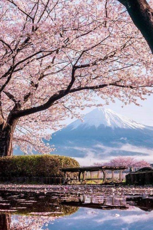
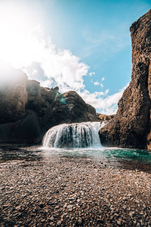

America!

Filled with jaw-dropping scenery at every turn, Kenai Fjords is easily one of Alaska’s most picturesque national parks. One of its most impressive features is the Harding Icefield, a 714 square-mile (1,850sq km) sheet of ice that's up to a mile (1.6km) thick in places, which feeds more than 30 glaciers.
Japan!
Japanese cherry blossom is a mesmerizing sight. The significance of cherry trees goes back centuries in Japanese culture. Known as ‘sakura’ the pink flowers symbolize how short and precious life is.cherry blossoms take pride of place, a source of conversation as people become entranced by the trees.
Denmark!

Mykineshólmur is the westernmost point of the Faroe Islands. It is an islet connected to Mykines Island by a 40-meter-long footbridge that rises 30 meters above the Atlantic Ocean (the bridge is closed). A historic lighthouse, built in 1909, stands at the end of the islet. This lighthouse guided ships through treacherous waters and served as a weather station, measuring temperatures and wind speeds.
Iceland!
A natural landscape that is almost too awe-inspiring to believe, Fjaðrárgljúfur was carved through the earth over millions of years, all thanks to the natural flow of the Fjaðrá River. The imposing canyon can be found to the west of the village of Kirkjubæjarklaustur.